Refitting the front half-fairing
Reassembly of the fairing
If previously disassembled, reassemble the front half-fairing.
Make sure that the quick-release fasteners (16) are in place on front half-fairings.
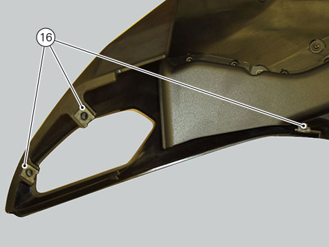
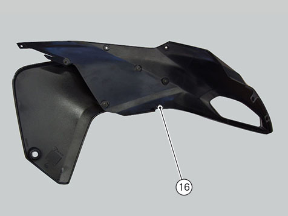
Make sure the O-ring (17) is in place on air pressure sensor (15).
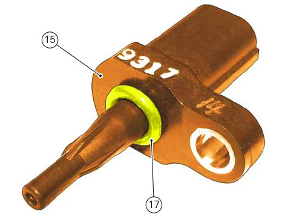
Refit hose (7) and air pressure sensor (15) on RH front half-fairing by starting and tightening screw (14) to 5 Nm ±10%.
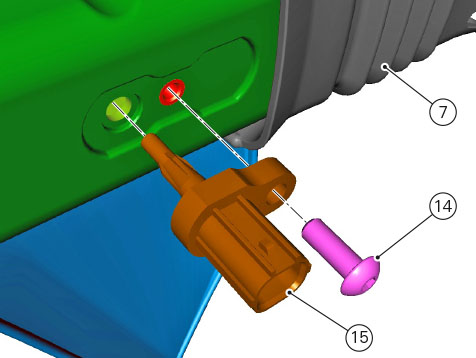
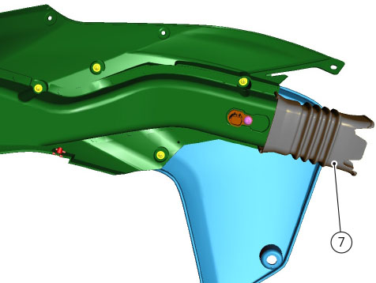
Assemble the LH half-fairing (18) to lower half-fairing (19) by engaging edge (20) into groove (21).
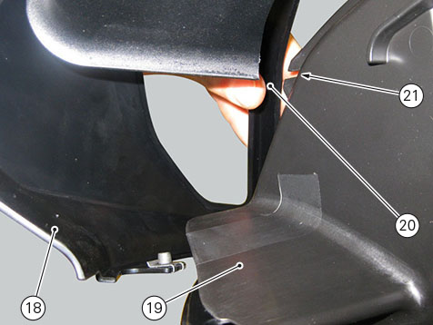
Fasten RH half-fairing (18) to lower half-fairing (19) by starting and tightening screw (11) to 2 Nm ± 10%.
Use the relevant tab (22) as retainer of the air conveyor.
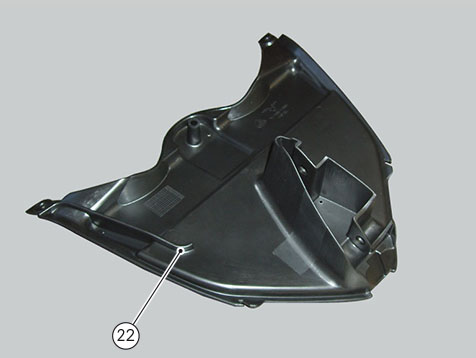
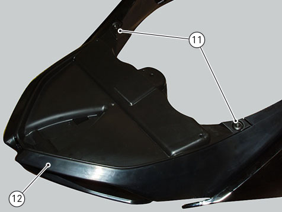
Carry out the same procedure to reassemble the left-hand half-fairing.
Join the half-fairings and start screws (13).
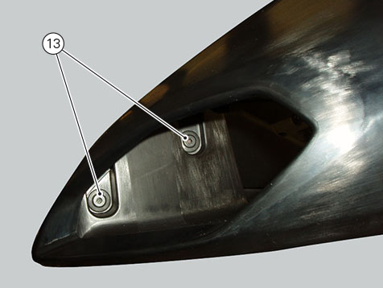
Tighten the screws (13) to a torque of 2 Nm ±10%.
Refitting the fairings
Make sure that clips (23) are in place on headlight fairing.
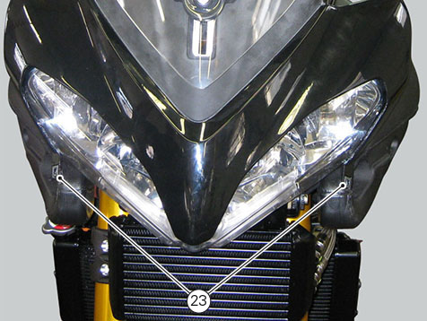
Refit the front half-fairing and fit hose (7) into airbox resonator.
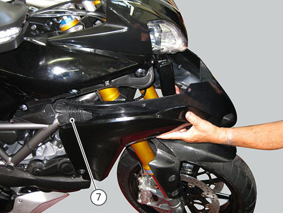
Note
Use rubber-specific lubricant to help hose insertion, if necessary.
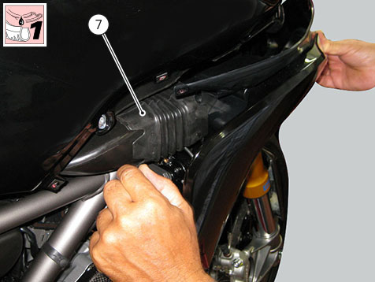
Connect the air temperature sensor (8).
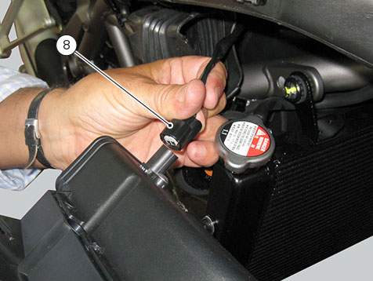
Centre the front half-fairing by inserting pin (9), on the inside, into vibration damper on oil cooler.
Note
Use rubber-specific lubricant to help pin insertion on vibration damper.
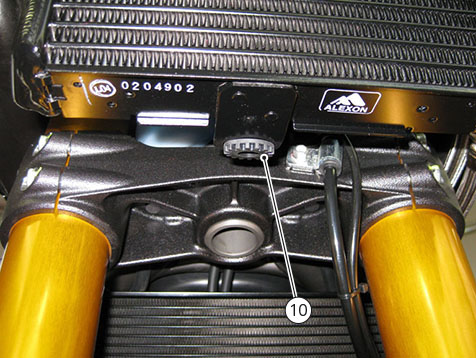
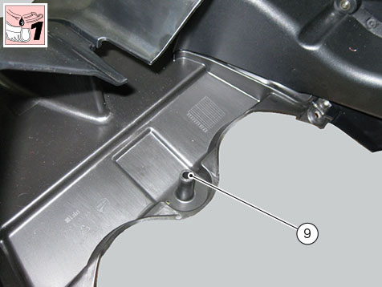
Fit the nylon washers under screws, then start the front half-fairing retaining screws (4) and tighten them to a torque of 2 Nm ±10%.
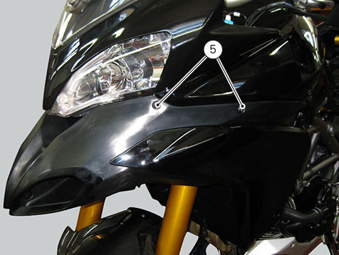
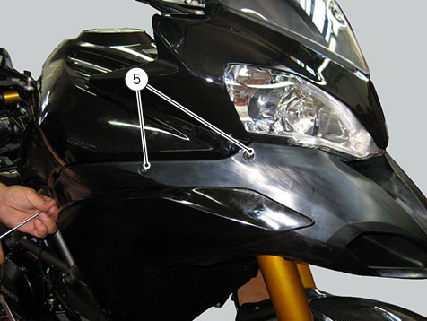
Refit the air deflector (1) by inserting tab (3) in the slot on front half-fairing.
Apply the recommended threadlocker to the screws (2).
Fit nylon washers, then start the screws (2) and tighten them to a torque of 2 Nm ± 10%.
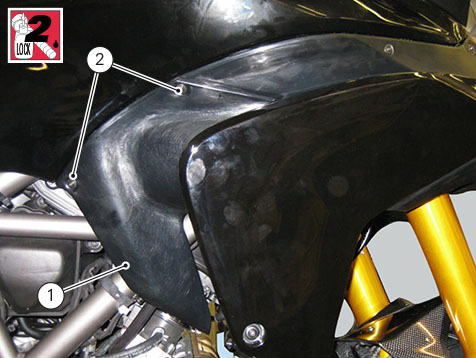
Make sure screws (24) are tightened to a torque of 6 Nm ± 10%.
Fit the vibration damper (25) to the bracket secured to radiator.
Fit bush (27) in vibration damper (25).
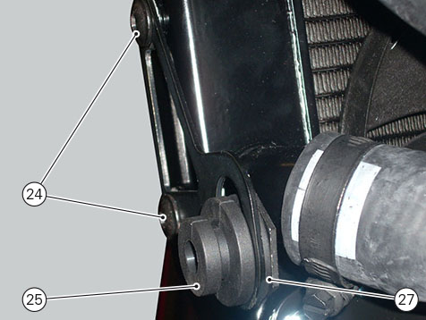
Perform the same procedure to refit the air deflector (4).
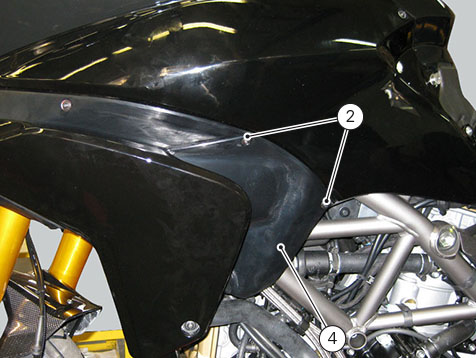
Smear rubber blocks (25) with recommended lubricant, over the surfaces that will come in contact with collar and underside of screws (6).
Start and tighten the screws (6) to a torque of 5 Nm ± 10%, while holding the threaded bushes (27).
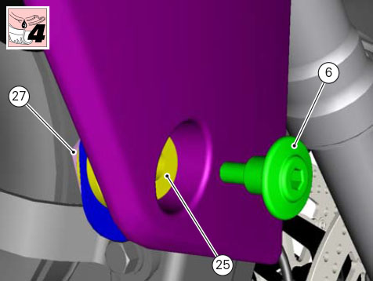
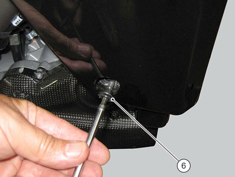
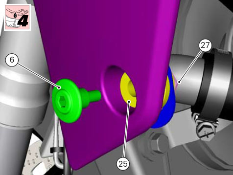
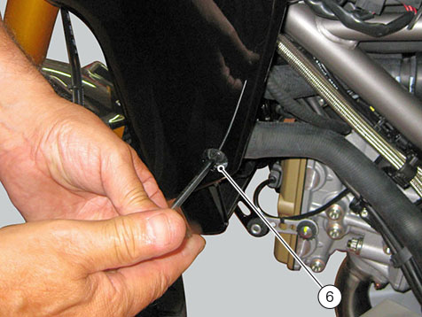